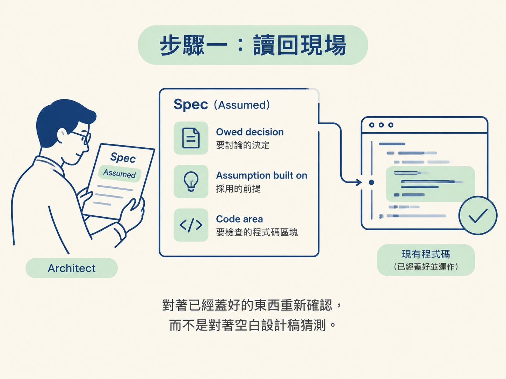
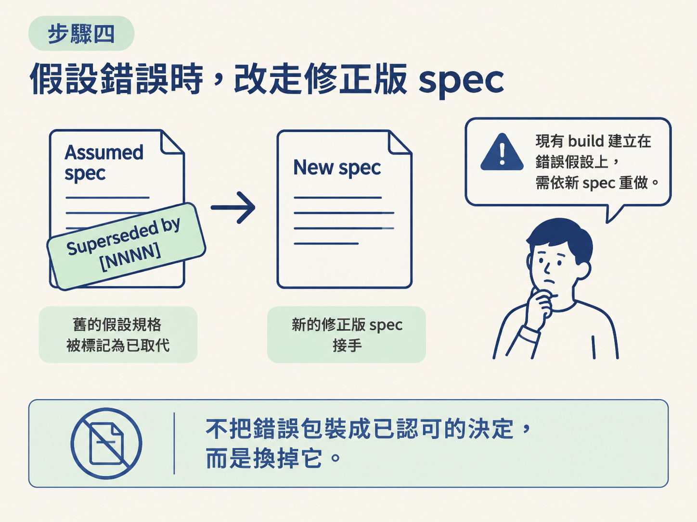

你要實際跑一次 ratification：先讀取 Assumed spec 的三個關鍵欄位，再讓 /architect 對著已經寫好的程式碼重跑設計對話，最後依照「假設成立」或「假設錯誤」做出對應的收尾。
開始前，請確認兩件事：
docs/specs/ 裡有一份狀態為 Assumed 的 spec。上一節留下的 Assumed spec，記錄的是一個為了先往前走而採用的假設。功能可能已經上線，但那個決定還沒有被正式討論，像一張還掛在牆上的欠條。
Ratification（補票、正式承認）就是把這筆帳結清。做法是回頭檢查當初的假設，把它補成一份講得出脈絡和取捨的正式決策；假設不成立，就明確換成正確的決定。這中間不必偷偷改文件，也不用追究誰先動手。
通常使用類似下面的指令觸發流程：
/architect <feature>: ratify …
/architect 會先找到 docs/specs/ 裡的 Assumed spec，並完整讀過它。接著確認以下三個欄位：
## Owed decision：當初還沒有正式決定的是哪個選擇。## Assumption built on：這次 build 實際採用了什麼假設。## Code area：對應的程式碼位在哪裡。這三個欄位把討論範圍固定下來：要討論的是哪個決定、當初採用了什麼前提，以及要檢查哪一段真實程式碼。討論的起點是已經蓋好的東西，不是一份空白的設計稿。

接下來，/architect 會依照一般設計對話的方式進行：
差別在於，這次討論是錨定在眼前已經運作的實作上。對話結束後，請依照實際結論走下面其中一條路。
如果討論確認當初採用的假設是對的，就把它補成完整的決策記錄。文件至少要填齊：
接著修改 **Status**: 這一行，移除 Assumed，並改成符合功能目前生命週期的狀態：
In Progress。之後再由 /develop 在收尾時推進到 Accepted。Accepted。這一步完成後，原本的臨時假設就成了一份推理完整的正式記錄，可以拿出來查，不必再當成歷史包袱。
如果討論發現當初採用的方向是錯的，就不能只在舊文件裡補上理由。請建立一份包含真正決定的修正版 spec；可以新開一份，也可以使用 supersede（取代）流程。
然後完成以下兩個動作：
Superseded by [NNNN]，並指向新的 spec。這裡不能把錯誤包裝成已經被認可的決定。當假設站不住腳時，ratification 的正確結果就是換掉它，讓新版 spec 接手。

一次 ratification 完成後，請確認原本的 spec 已經不再是 Assumed，而且符合以下其中一種結果：
In Progress 或 Accepted。Superseded，並由新版 spec 接手。庫裡不應再留下沒有後續處理的 Assumed spec。這樣，「先蓋再記」才是一個可持續的做法：可以先用假設往前走，但之後一定要把它補完或推翻，別讓臨時假設默默變成永久事實。
Ratification 是
Assumedspec 的正式收尾：/architect先讀owed decision、assumption built on、code area，再對著已蓋好的程式碼重跑設計對話。假設成立，就填齊理由並把狀態改成符合 feature 生命週期的狀態；假設錯誤，就寫修正版 spec、把舊文件標成Superseded，並請使用者依新決定重做。一次 ratification 之後，不應再留下任何Assumed。
到這裡，你已經完成從閘門、逃生口到補票的循環。接下來還會遇到 Assumed、In Progress、Accepted、Superseded 等 spec 狀態；最後一節會把五個狀態一次攤開，整理成可查閱的完整對照表。